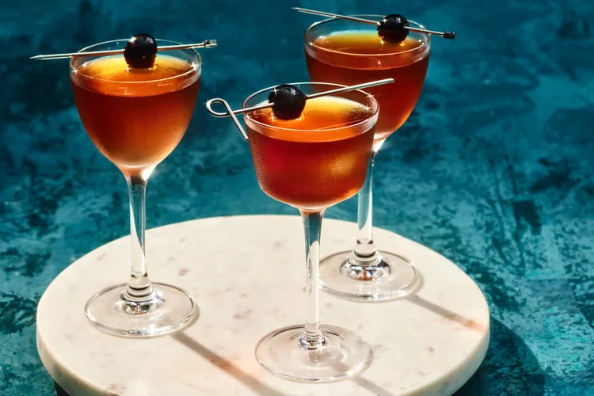

7. Manhattan
If you only learn to make one whiskey cocktail, this should be it.

Rye whiskey, sweet vermouth, and Angostura bitters are all it takes to craft this iconic cocktail. A cherry is the
standard garnish, but if a lemon twist fits your mood, follow that bliss.
Ingredients
2 ounces rye whiskey
1 ounce sweet vermouth
- Such as Carpano Antica Formula
2 dashes Angostura bitters
Maraschino cherry
How to prepare
Step 1
- Add rye whiskey, sweet vermouth, and bitters to a mixing glass filled with ice. Stir well for 15–20 seconds until well chilled.
Step 2
- Strain into a chilled coupe glass and garnish with a maraschino cherry.
Manhattan Variations
- Black Manhattan
- Swaps amaro in place of the original’s sweet vermouth, and uses orange bitters rather than Angostura.
- Bobby Burns
- Uses Scotch whisky and opts for a small amount of the herbal liqueur Benedictine rather than bitters.
- Perfect Manhattan
- Splits the vermouth to equal parts sweet and dry vermouth, 1/2 ounce each.
- Reverse Manhattan
- Inverts the amount of whiskey to vermouth, using 1 ounce of rye whiskey combined with 2 ounces of sweet vermouth.
- Rob Roy
- Uses Scotch whiskey instead of rye.
Enjoy your Manhattan!